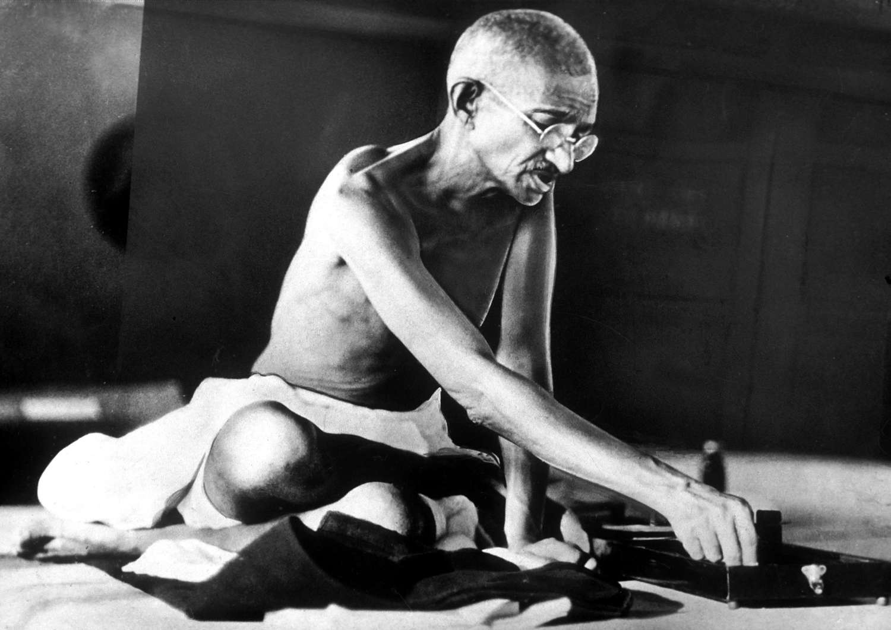
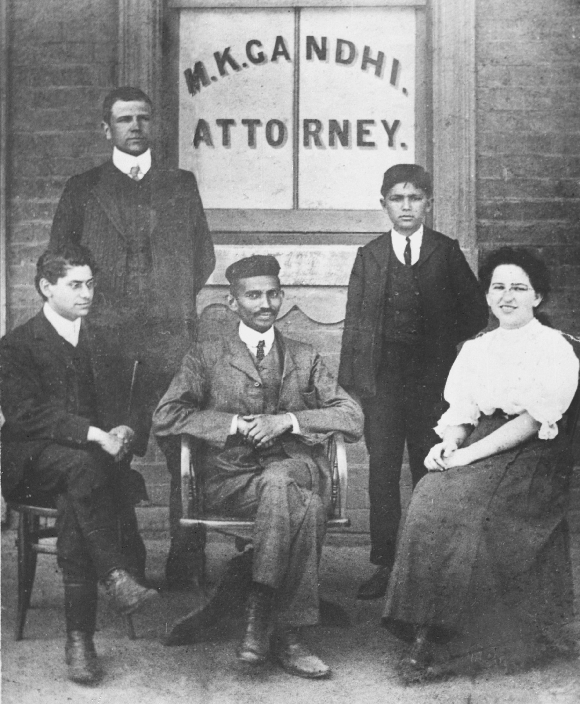

Gandhi’s Challenges
“Strength does not come from physical capacity. It comes from an indomitable will.”— Mahatma Gandhi
01 — South Africa
In 1893, Gandhi arrived in South Africa as a young lawyer. On his very first train journey, a white passenger complained about sharing a first-class carriage with an Indian man. Gandhi was forcibly removed from the train and thrown onto the platform at Pietermaritzburg — despite holding a valid first-class ticket.
That night, sitting alone in the cold station, Gandhi made a decision that would change history. Rather than retreat, he resolved to fight racial injustice with every tool at his disposal. South Africa was where Gandhi the lawyer became Gandhi the activist.
For the next 21 years, he battled discriminatory laws targeting Indian residents — pass laws, voting restrictions, and forced registration. The resistance he built in South Africa became the blueprint for everything that followed in India.

02 — British Colonial Rule
When Gandhi returned to India in 1915, he inherited a nation crushed under nearly two centuries of British rule. The colonial government imposed crippling taxes on India's poorest citizens — including the infamous salt tax, which made it illegal for Indians to produce or collect their own salt.
Famine was rampant. Entire regions were stripped of resources to feed the British economy. The Jallianwala Bagh massacre of 1919 — where British troops opened fire on a peaceful crowd, killing hundreds — proved to Gandhi that working within the colonial system was impossible. Only total noncooperation could break the empire's hold.
Gandhi refuses all positions offered under British authority and begins organizing the independence movement from the ground up.
British troops open fire on a peaceful crowd, killing hundreds. The atrocity proves to Gandhi that working within the colonial system is impossible.
Gandhi launches a nationwide campaign urging Indians to boycott British goods, courts, and schools — striking the empire where it hurts most.
Gandhi leads a 240-mile march to the sea to make salt in open defiance of British law — one of history's most powerful acts of civil disobedience.
03 — Imprisonment
After the Non-Cooperation Movement, British authorities arrested Gandhi on charges of sedition. He was sentenced to six years in Yeravda Central Jail. Rather than plead for mercy, Gandhi told the judge he accepted the sentence as the greatest honor.
Following the Salt March, Gandhi was imprisoned again at Yeravda. His arrest only intensified international attention on India's independence struggle — turning a regional protest into a global cause.
Gandhi launched the Quit India Movement demanding immediate British withdrawal. He was arrested within hours and held for nearly two years. During this time he began fasting — using his own body as a weapon of moral pressure against the empire.
“You can chain me, you can torture me, you can even destroy this body, but you will never imprison my mind.” — Mahatma Gandhi
04 — Criticism & Opposition
Gandhi's path was not only opposed by the British — he faced fierce criticism from within India itself. His struggles with his own countrymen were among his most painful challenges.
Many Indian leaders, including Subhas Chandra Bose, believed nonviolence was too slow and passive. Bose argued that only armed resistance could drive out the British, creating a deep ideological split within the independence movement.
Younger revolutionary groups like the Hindustan Socialist Republican Association, led by Bhagat Singh, rejected Gandhi's methods entirely. They saw his negotiations with the British as compromise — even betrayal.
Gandhi's inclusive vision of a united Hindu-Muslim India drew criticism from both communities. Hindu nationalists viewed his outreach to Muslims as weakness. Muslim leaders questioned whether his Congress party truly represented them.
05 — The Partition of India
India's independence in 1947 should have been Gandhi's greatest triumph. Instead, it was accompanied by one of the most painful events of his life — the partition of the subcontinent into two nations: India and Pakistan.
The division unleashed catastrophic Hindu-Muslim violence. Millions were displaced. Hundreds of thousands were killed in communal riots. Gandhi walked barefoot through riot-torn villages, fasting and pleading for peace — a frail old man trying to hold together a nation tearing itself apart.
He had spent his entire life fighting for a unified, tolerant India. The partition felt like the undoing of everything he believed in. He called it the worst catastrophe of his life — worse than any prison cell, any British law, any personal sacrifice he had endured.
“What is happening today is a warning that if we do not act wisely, the future will be worse than the past.” — Mahatma Gandhi, on the partition
Despite every obstacle, Gandhi changed the world. Explore the lasting impact he left behind.